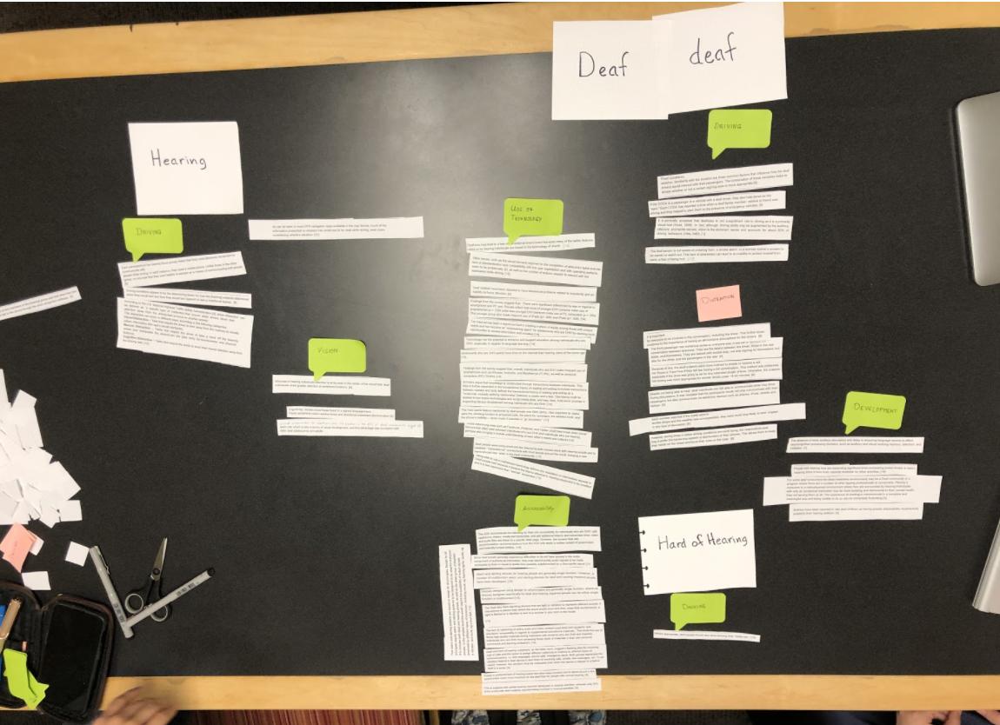
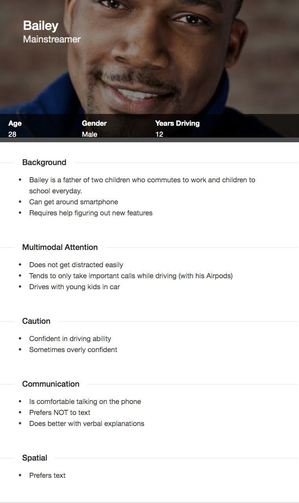
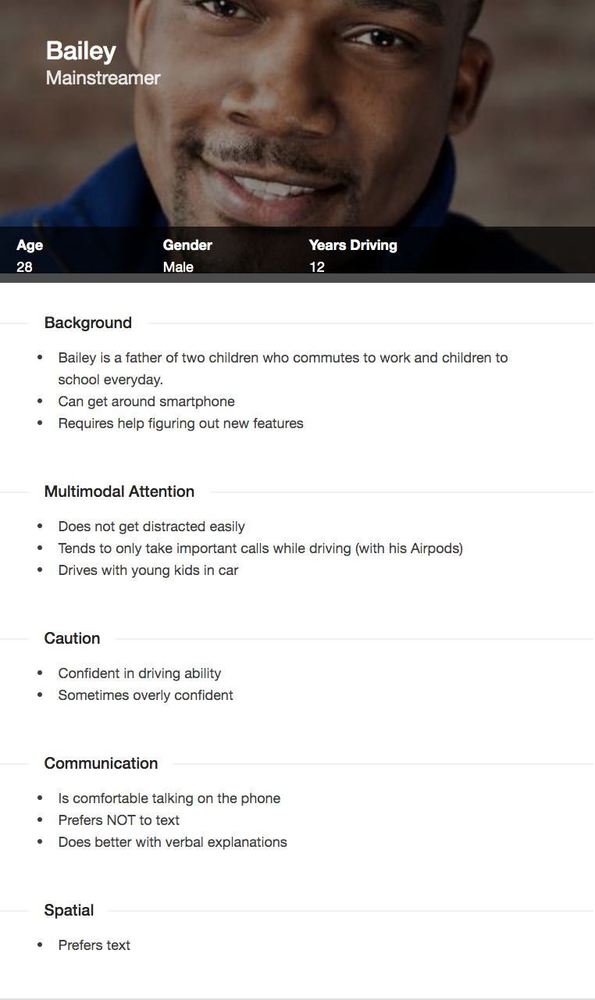
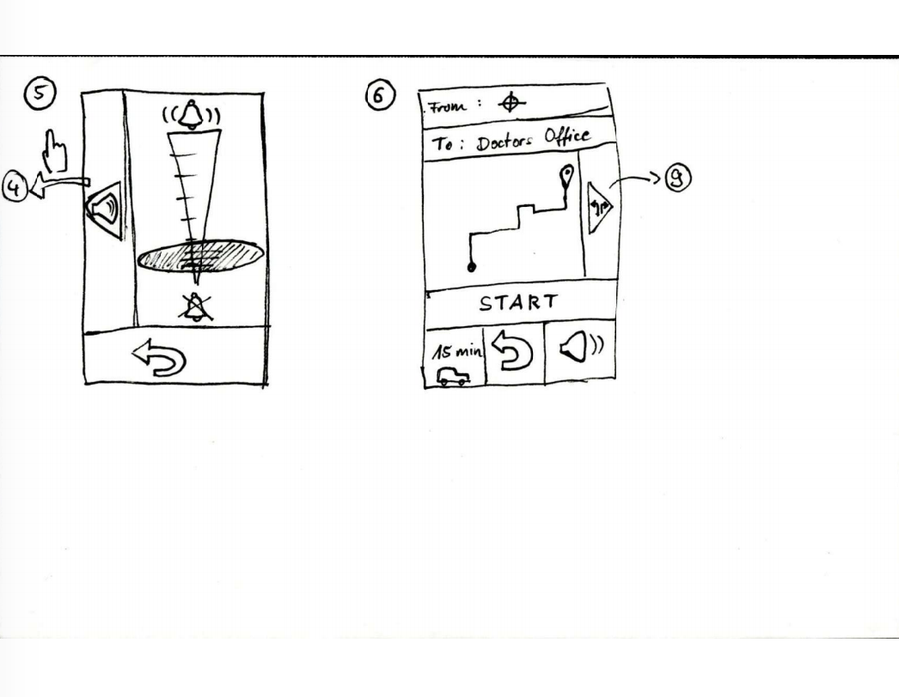
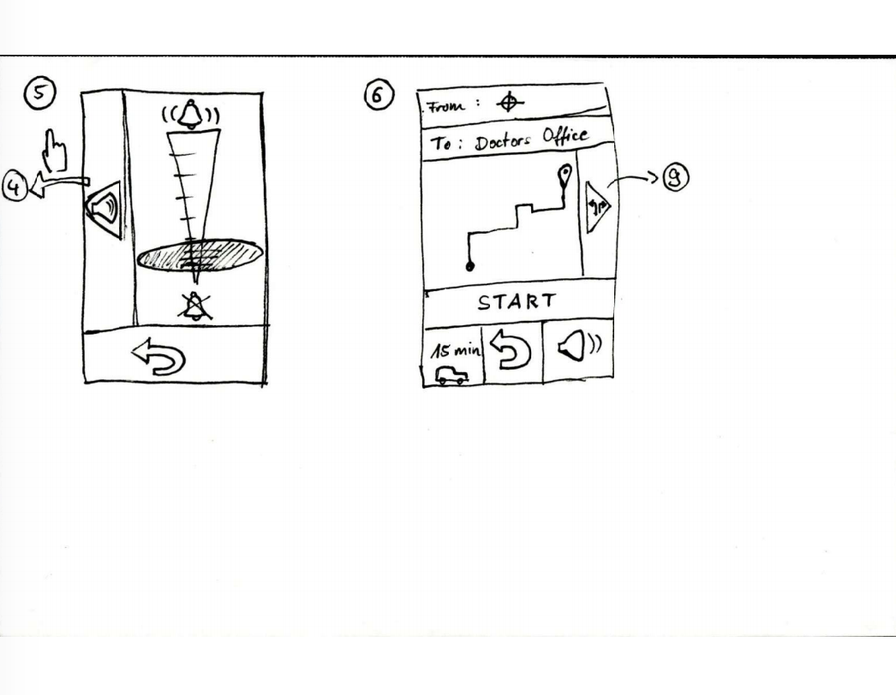

An Inclusive Navigation App.
How can we design for inclusivity and not just accessibility?
Overview
I was tasked to work on a team to design an application that was inclusive to the Deaf community for an Inclusive Design course I took at OSU. This course was focused on how to design for inclusivity and the persona development life cycle in order to properly represent and serve the underserved populations. In this case, we needed to make our app usable to both mainstream users as well as the deaf community. Our team met in person 1-2 times a week over the course of ten weeks to work on this project.
My role: User Research, Persona Development, Wireframing
Time Frame: 10 Weeks
Tools: Paper Prototypes, Balsamiq
Design process
Research
In order to fully understand who we were designing for, our group conducted a combination of qualitative and quantitative research. We focused mostly on learning about the underserved, deaf population. Our main sources for data were through online articles and informal personal interviews with deaf individuals. Since one team member had close connections with friends who were deaf, she was in charge of all the interviews. The rest of us collected data through research papers and online personal anecdotes from deaf individuals. We collected our findings on a shared google doc and later came together to synthesize our findings.
Persona Development
We then took our research findings and created affinity diagrams. We layed out specific facts we found on a table and categorized them into similar groupings. By doing this, we were able to create facets for our persona skeletons.
Our team created two personas; one representing the underserved population: a deaf individual and the other represented the mainstream population. This way we had a representation front he two ends of the spectrum. From there we then fleshed out our personas and further developed them:
 

Ideation
After creating our personas, we were ready to begin wireframing. Each team member came up with a couple rough sketch ideas on their own. We then came together to share ideas. From there, we were able to further develop our wireframe sketches.
We also participated in a classroom showcase where we displayed our wireframes and received input from other teams. This allowed us to make changes and improvements to our design so far.


 

Usability Evaluation
Once we had a low fidelity prototype we felt good about, our group conducted a cognitive walkthrough using our two personas. With a goal in mind, we evaluated each step our personas would need to make to navigate through our application. If we felt our persona would not have made the choice we had intended, we noted it down and then revisited the prototype afterwards to make the appropriate changes.
Prototypes
From here we moved on to develop more mid-fidelity prototypes using Balamiq. As a team, we collaboratively designed the prototype.
From there, we participated in another classroom showcase were we were able to get input from our classmates. After this we made our final changes.
Reflection
This project taught me the importance of designing for inclusivity. There is such a wide range of reasons why a person might not be able to use a piece of software. Designing with the user in mind is crucial in order to prevent exclusion. I also learned about how helpful personas can be in the design process. They really help you visualize your user and their needs and expectations.
Given more time and resources I would have liked to create high fidelity prototypes and conduct user interviews on those, focusing on our underserved deaf population.